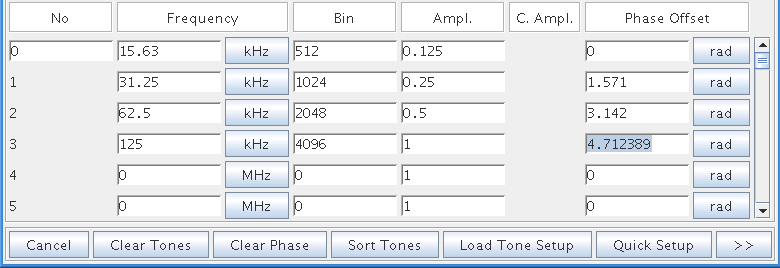

The Phase Algorithms
Linear Phase Shift Starting with 0 phase shift for the first tone in the tone definition list, the phase shift for each tone will be increased by 2*pi/n radians (360/n degrees), where n is the total number of tones. This leads to an equal distribution of phase shifts over all tones. The following figure shows the resulting phase shifts for a 4-tone waveform.

If the calculated waveform with the phase shifts determined by this algorithm does not match the given criteria for PRR, you will be prompted to either accept or reject the calculated waveform.
Random Phase Shift This algorithm calculates a random shift for each tone and then checks whether the criteria for PRR are matched. If not, new random phase shifts get calculated and the check is done again. This is repeated up to the number of times you specified in the Maximum number of calculations (random) field.
If no phase shifts were found that matched the PRR criteria, you will be prompted to either accept or reject the last calculated waveform.
User Defined Phase Values The phase shifts that are entered in the tone definition will be used.
If the calculated waveform does not match the given criteria for PRR, you will be prompted to either accept or reject the calculated waveform.